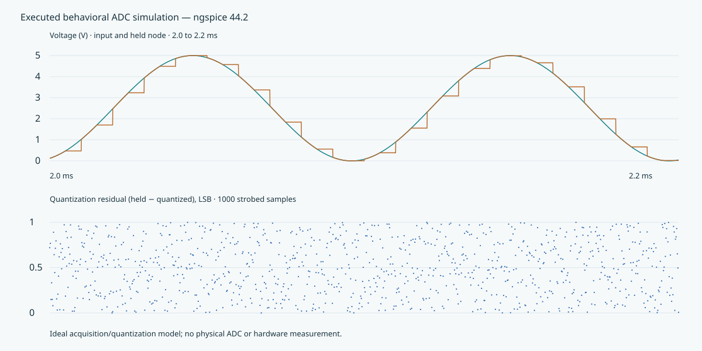

Pheonixs — five LTspice models
Selected from your source archive · native schematics and plot presets · local libraries
Executed generic ADC experiment
Quantization, code range, signal span and hold checks pass. About 73.93 dB SINAD / 11.99 derived ENOB for this ideal behavioral model.

Experiment results · Strobed samples
Evidence status
Fresh native LTspice execution, plot import and hardware measurements were not performed here. Four protected IC models require their intended simulator. The flyback's historical RAW reaches 100 ms, while the current source requests 10 ms; it does not validate the present revision.
Original source files and vendor attribution are retained. The installer, unrelated pictures and cache files are excluded.